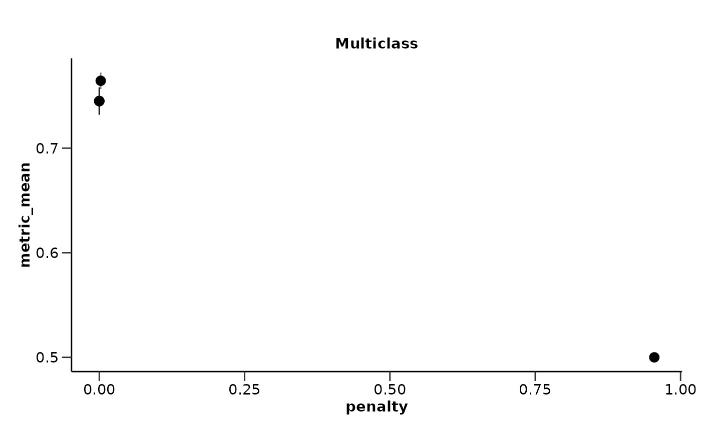
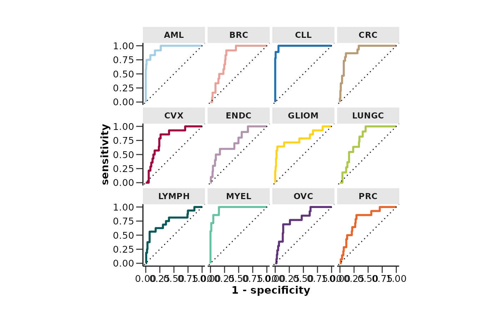
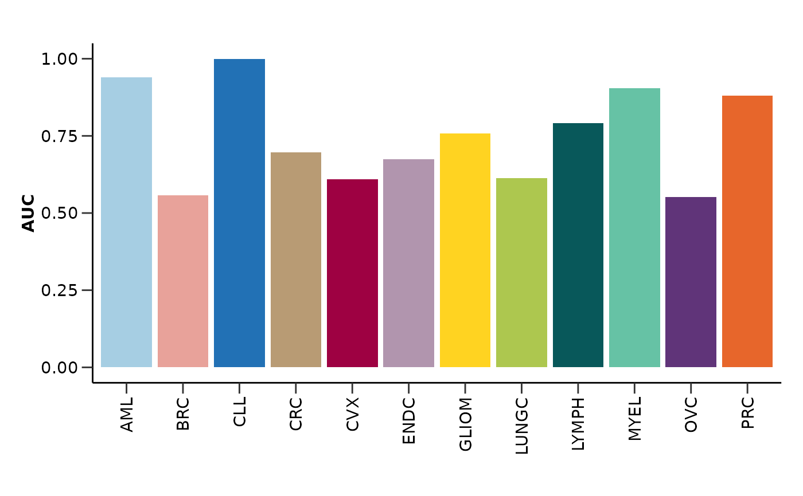
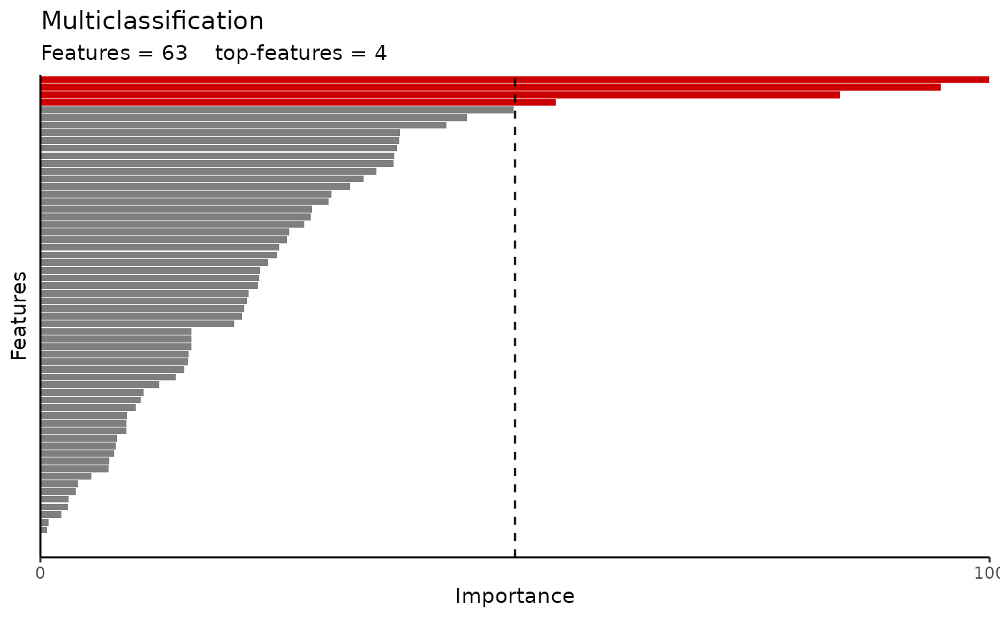

do_rreg_multi() runs the regularized multiclassification model pipeline. It splits the
data into training and test sets, creates class-balanced case-control groups,
and fits the model. It performs hyperparameter optimization and fits the best
model. It also plots the ROC curve and the AUC barplot for each class.
Usage
do_rreg_multi(
olink_data,
metadata,
variable = "Disease",
wide = TRUE,
strata = TRUE,
exclude_cols = "Sex",
ratio = 0.75,
type = "lasso",
cor_threshold = 0.9,
cv_sets = 5,
grid_size = 10,
ncores = 4,
hypopt_vis = TRUE,
palette = NULL,
vline = TRUE,
varimp_yaxis_names = FALSE,
seed = 123
)Arguments
- olink_data
Olink data.
- metadata
Metadata.
- variable
The variable to predict. Default is "Disease".
- wide
Whether the data is wide format. Default is TRUE.
- strata
Whether to stratify the data. Default is TRUE.
- exclude_cols
Columns to exclude from the data before the model is tuned.
- ratio
Ratio of training data to test data. Default is 0.75.
- type
Type of regularization. Default is "lasso". Other options are "ridge" and "elnet".
- cor_threshold
Threshold of absolute correlation values. This will be used to remove the minimum number of features so that all their resulting absolute correlations are less than this value.
- cv_sets
Number of cross-validation sets. Default is 5.
- grid_size
Size of the hyperparameter optimization grid. Default is 10.
- ncores
Number of cores to use for parallel processing. Default is 4.
- hypopt_vis
Whether to visualize hyperparameter optimization results. Default is TRUE.
- palette
The color palette for the plot. If it is a character, it should be one of the palettes from
get_hpa_palettes(). Default is NULL.- vline
Whether to add a vertical line at 50% importance. Default is TRUE.
- varimp_yaxis_names
Whether to add y-axis names to the variable importance plot. Default is FALSE.
- seed
Seed for reproducibility. Default is 123.
Value
A list with the following elements:
hypopt_res: Hyperparameter optimization results.
finalfit_res: Final model fitting results.
roc_curve: ROC curve plot.
auc: AUC values for each class.
auc_barplot: AUC barplot.
var_imp_res: Variable importance results.
Details
If the data contain missing values, KNN imputation will be applied.
If no check for feature correlation is preferred, set cor_threshold to 1.
It will filter out rows that contain NAs in Disease.
Examples
do_rreg_multi(example_data,
example_metadata,
wide = FALSE,
palette = "cancers12",
cv_sets = 5,
grid_size = 5,
ncores = 1)
#> Joining with `by = join_by(DAid)`
#> Warning: Too little data to stratify.
#> • Resampling will be unstratified.
#> Sets are ready. Multiclassification model fitting is starting...
#> Warning: Too little data to stratify.
#> • Resampling will be unstratified.
#> Warning: No event observations were detected in `truth` with event level 'BRC'.
#> Warning: No event observations were detected in `truth` with event level 'CLL'.
#> Warning: No event observations were detected in `truth` with event level 'CRC'.
#> Warning: No event observations were detected in `truth` with event level 'CVX'.
#> Warning: No event observations were detected in `truth` with event level 'ENDC'.
#> Warning: No event observations were detected in `truth` with event level 'LUNGC'.
#> Warning: No event observations were detected in `truth` with event level 'PRC'.
#> Warning: No event observations were detected in `truth` with event level 'AML'.
#> Warning: No event observations were detected in `truth` with event level 'CLL'.
#> Warning: No event observations were detected in `truth` with event level 'CVX'.
#> Warning: No event observations were detected in `truth` with event level 'GLIOM'.
#> Warning: No event observations were detected in `truth` with event level 'LUNGC'.
#> Warning: No event observations were detected in `truth` with event level 'MYEL'.
#> Warning: No event observations were detected in `truth` with event level 'OVC'.
#> Warning: No event observations were detected in `truth` with event level 'AML'.
#> Warning: No event observations were detected in `truth` with event level 'CRC'.
#> Warning: No event observations were detected in `truth` with event level 'CVX'.
#> Warning: No event observations were detected in `truth` with event level 'ENDC'.
#> Warning: No event observations were detected in `truth` with event level 'GLIOM'.
#> Warning: No event observations were detected in `truth` with event level 'LUNGC'.
#> Warning: No event observations were detected in `truth` with event level 'LYMPH'.
#> Warning: No event observations were detected in `truth` with event level 'MYEL'.
#> Warning: No event observations were detected in `truth` with event level 'OVC'.
#> Warning: No event observations were detected in `truth` with event level 'PRC'.
#> Warning: No event observations were detected in `truth` with event level 'AML'.
#> Warning: No event observations were detected in `truth` with event level 'BRC'.
#> Warning: No event observations were detected in `truth` with event level 'CLL'.
#> Warning: No event observations were detected in `truth` with event level 'ENDC'.
#> Warning: No event observations were detected in `truth` with event level 'GLIOM'.
#> Warning: No event observations were detected in `truth` with event level 'LYMPH'.
#> Warning: No event observations were detected in `truth` with event level 'MYEL'.
#> Warning: No event observations were detected in `truth` with event level 'AML'.
#> Warning: No event observations were detected in `truth` with event level 'CRC'.
#> Warning: No event observations were detected in `truth` with event level 'GLIOM'.
#> Warning: No event observations were detected in `truth` with event level 'MYEL'.
#> Warning: No event observations were detected in `truth` with event level 'AML'.
#> Warning: No event observations were detected in `truth` with event level 'CLL'.
#> Warning: No event observations were detected in `truth` with event level 'CRC'.
#> Warning: No event observations were detected in `truth` with event level 'LUNGC'.
#> Warning: No event observations were detected in `truth` with event level 'AML'.
#> Warning: No event observations were detected in `truth` with event level 'CLL'.
#> Warning: No event observations were detected in `truth` with event level 'CRC'.
#> Warning: No event observations were detected in `truth` with event level 'ENDC'.
#> Warning: No event observations were detected in `truth` with event level 'MYEL'.
#> Warning: No event observations were detected in `truth` with event level 'OVC'.
#> Warning: No event observations were detected in `truth` with event level 'AML'.
#> Warning: No event observations were detected in `truth` with event level 'CLL'.
#> Warning: No event observations were detected in `truth` with event level 'CVX'.
#> Warning: No event observations were detected in `truth` with event level 'MYEL'.
#> Warning: No event observations were detected in `truth` with event level 'PRC'.
#> Warning: No event observations were detected in `truth` with event level 'BRC'.
#> Warning: No event observations were detected in `truth` with event level 'CLL'.
#> Warning: No event observations were detected in `truth` with event level 'CRC'.
#> Warning: No event observations were detected in `truth` with event level 'ENDC'.
#> Warning: No event observations were detected in `truth` with event level 'GLIOM'.
#> Warning: No event observations were detected in `truth` with event level 'MYEL'.
#> Warning: No event observations were detected in `truth` with event level 'OVC'.
#> Warning: No event observations were detected in `truth` with event level 'BRC'.
#> Warning: No event observations were detected in `truth` with event level 'CLL'.
#> Warning: No event observations were detected in `truth` with event level 'CRC'.
#> Warning: No event observations were detected in `truth` with event level 'CVX'.
#> Warning: No event observations were detected in `truth` with event level 'GLIOM'.
#> Warning: No event observations were detected in `truth` with event level 'LUNGC'.
#> Warning: No event observations were detected in `truth` with event level 'LYMPH'.
#> Warning: No event observations were detected in `truth` with event level 'PRC'.
#> Warning: No event observations were detected in `truth` with event level 'AML'.
#> Warning: No event observations were detected in `truth` with event level 'BRC'.
#> Warning: No event observations were detected in `truth` with event level 'CLL'.
#> Warning: No event observations were detected in `truth` with event level 'CRC'.
#> Warning: No event observations were detected in `truth` with event level 'CVX'.
#> Warning: No event observations were detected in `truth` with event level 'LYMPH'.
#> Warning: No event observations were detected in `truth` with event level 'MYEL'.
#> Warning: No event observations were detected in `truth` with event level 'AML'.
#> Warning: No event observations were detected in `truth` with event level 'ENDC'.
#> Warning: No event observations were detected in `truth` with event level 'GLIOM'.
#> Warning: No event observations were detected in `truth` with event level 'LUNGC'.
#> Warning: No event observations were detected in `truth` with event level 'MYEL'.
#> Warning: No event observations were detected in `truth` with event level 'OVC'.
#> $hypopt_res
#> $hypopt_res$elnet_tune
#> # Tuning results
#> # 5-fold cross-validation using stratification
#> # A tibble: 5 × 5
#> splits id .metrics .notes .predictions
#> <list> <chr> <list> <list> <list>
#> 1 <split [351/88]> Fold1 <tibble [5 × 5]> <tibble [0 × 3]> <tibble [440 × 16]>
#> 2 <split [351/88]> Fold2 <tibble [5 × 5]> <tibble [0 × 3]> <tibble [440 × 16]>
#> 3 <split [351/88]> Fold3 <tibble [5 × 5]> <tibble [0 × 3]> <tibble [440 × 16]>
#> 4 <split [351/88]> Fold4 <tibble [5 × 5]> <tibble [0 × 3]> <tibble [440 × 16]>
#> 5 <split [352/87]> Fold5 <tibble [5 × 5]> <tibble [0 × 3]> <tibble [435 × 16]>
#>
#> $hypopt_res$elnet_wf
#> ══ Workflow ════════════════════════════════════════════════════════════════════
#> Preprocessor: Recipe
#> Model: multinom_reg()
#>
#> ── Preprocessor ────────────────────────────────────────────────────────────────
#> 4 Recipe Steps
#>
#> • step_normalize()
#> • step_nzv()
#> • step_corr()
#> • step_impute_knn()
#>
#> ── Model ───────────────────────────────────────────────────────────────────────
#> Multinomial Regression Model Specification (classification)
#>
#> Main Arguments:
#> penalty = tune::tune()
#> mixture = 1
#>
#> Computational engine: glmnet
#>
#>
#> $hypopt_res$train_set
#> # A tibble: 439 × 102
#> DAid AARSD1 ABL1 ACAA1 ACAN ACE2 ACOX1 ACP5 ACP6 ACTA2
#> <chr> <dbl> <dbl> <dbl> <dbl> <dbl> <dbl> <dbl> <dbl> <dbl>
#> 1 DA00003 NA NA NA 0.989 NA 0.330 1.37 NA NA
#> 2 DA00004 3.41 3.38 1.69 NA 1.52 NA 0.841 0.582 1.70
#> 3 DA00005 5.01 5.05 0.128 0.401 -0.933 -0.584 0.0265 1.16 2.73
#> 4 DA00006 6.83 1.18 -1.74 -0.156 1.53 -0.721 0.620 0.527 0.772
#> 5 DA00007 NA NA 3.96 0.682 3.14 2.62 1.47 2.25 2.01
#> 6 DA00008 2.78 0.812 -0.552 0.982 -0.101 -0.304 0.376 -0.826 1.52
#> 7 DA00010 1.83 1.21 -0.912 -1.04 -0.0918 -0.304 1.69 0.0920 2.04
#> 8 DA00011 3.48 4.96 3.50 -0.338 4.48 1.26 2.18 1.62 1.79
#> 9 DA00012 4.31 0.710 -1.44 -0.218 -0.469 -0.361 -0.0714 -1.30 2.86
#> 10 DA00013 1.31 2.52 1.11 0.997 4.56 -1.35 0.833 2.33 3.57
#> # ℹ 429 more rows
#> # ℹ 92 more variables: ACTN4 <dbl>, ACY1 <dbl>, ADA <dbl>, ADA2 <dbl>,
#> # ADAM15 <dbl>, ADAM23 <dbl>, ADAM8 <dbl>, ADAMTS13 <dbl>, ADAMTS15 <dbl>,
#> # ADAMTS16 <dbl>, ADAMTS8 <dbl>, ADCYAP1R1 <dbl>, ADGRE2 <dbl>, ADGRE5 <dbl>,
#> # ADGRG1 <dbl>, ADGRG2 <dbl>, ADH4 <dbl>, ADM <dbl>, AGER <dbl>, AGR2 <dbl>,
#> # AGR3 <dbl>, AGRN <dbl>, AGRP <dbl>, AGXT <dbl>, AHCY <dbl>, AHSP <dbl>,
#> # AIF1 <dbl>, AIFM1 <dbl>, AK1 <dbl>, AKR1B1 <dbl>, AKR1C4 <dbl>, …
#>
#> $hypopt_res$test_set
#> # A tibble: 147 × 102
#> DAid AARSD1 ABL1 ACAA1 ACAN ACE2 ACOX1 ACP5 ACP6 ACTA2 ACTN4
#> <chr> <dbl> <dbl> <dbl> <dbl> <dbl> <dbl> <dbl> <dbl> <dbl> <dbl>
#> 1 DA00… 3.39 2.76 1.71 0.0333 1.76 -0.919 1.54 2.15 2.81 0.742
#> 2 DA00… 1.42 1.25 -0.816 -0.459 0.826 -0.902 0.647 1.30 0.798 -0.0659
#> 3 DA00… 4.39 3.34 -0.452 -0.868 0.395 1.71 1.49 -0.0285 0.200 -0.532
#> 4 DA00… 3.31 1.90 NA -0.926 0.408 0.687 1.03 0.612 2.19 0.258
#> 5 DA00… 1.46 0.832 -2.73 -0.371 2.27 0.0234 0.144 0.826 1.98 -0.280
#> 6 DA00… 2.62 2.48 0.537 -0.215 1.82 0.290 1.27 1.11 0.206 1.23
#> 7 DA00… 2.47 2.16 -0.486 NA 0.386 NA 1.38 0.536 1.86 0.00982
#> 8 DA00… 3.62 3.06 -1.34 0.965 1.05 1.53 0.152 -0.124 2.81 0.285
#> 9 DA00… 4.39 3.31 0.454 0.290 2.68 0.116 -1.32 0.945 2.14 -0.00881
#> 10 DA00… 0.964 2.94 1.55 1.67 2.50 0.164 1.83 1.46 3.03 0.449
#> # ℹ 137 more rows
#> # ℹ 91 more variables: ACY1 <dbl>, ADA <dbl>, ADA2 <dbl>, ADAM15 <dbl>,
#> # ADAM23 <dbl>, ADAM8 <dbl>, ADAMTS13 <dbl>, ADAMTS15 <dbl>, ADAMTS16 <dbl>,
#> # ADAMTS8 <dbl>, ADCYAP1R1 <dbl>, ADGRE2 <dbl>, ADGRE5 <dbl>, ADGRG1 <dbl>,
#> # ADGRG2 <dbl>, ADH4 <dbl>, ADM <dbl>, AGER <dbl>, AGR2 <dbl>, AGR3 <dbl>,
#> # AGRN <dbl>, AGRP <dbl>, AGXT <dbl>, AHCY <dbl>, AHSP <dbl>, AIF1 <dbl>,
#> # AIFM1 <dbl>, AK1 <dbl>, AKR1B1 <dbl>, AKR1C4 <dbl>, AKT1S1 <dbl>, …
#>
#> $hypopt_res$hypopt_vis

#>
#>
#> $finalfit_res
#> $finalfit_res$final
#> ══ Workflow [trained] ══════════════════════════════════════════════════════════
#> Preprocessor: Recipe
#> Model: multinom_reg()
#>
#> ── Preprocessor ────────────────────────────────────────────────────────────────
#> 4 Recipe Steps
#>
#> • step_normalize()
#> • step_nzv()
#> • step_corr()
#> • step_impute_knn()
#>
#> ── Model ───────────────────────────────────────────────────────────────────────
#>
#> Call: glmnet::glmnet(x = maybe_matrix(x), y = y, family = "multinomial", alpha = ~1)
#>
#> Df %Dev Lambda
#> 1 0 0.00 0.145200
#> 2 1 0.80 0.132300
#> 3 2 1.47 0.120500
#> 4 2 2.01 0.109800
#> 5 3 2.72 0.100100
#> 6 4 3.54 0.091180
#> 7 5 4.47 0.083080
#> 8 8 5.74 0.075700
#> 9 8 7.24 0.068980
#> 10 13 9.04 0.062850
#> 11 16 11.12 0.057270
#> 12 22 13.33 0.052180
#> 13 24 15.48 0.047540
#> 14 33 17.80 0.043320
#> 15 35 20.12 0.039470
#> 16 43 22.49 0.035960
#> 17 48 24.98 0.032770
#> 18 50 27.39 0.029860
#> 19 58 29.74 0.027210
#> 20 61 32.02 0.024790
#> 21 68 34.24 0.022590
#> 22 74 36.53 0.020580
#> 23 81 38.94 0.018750
#> 24 86 41.38 0.017090
#> 25 87 43.81 0.015570
#> 26 87 46.18 0.014190
#> 27 90 48.49 0.012920
#> 28 93 50.75 0.011780
#> 29 95 53.01 0.010730
#> 30 97 55.23 0.009777
#> 31 97 57.37 0.008909
#> 32 99 59.44 0.008117
#> 33 99 61.51 0.007396
#> 34 99 63.55 0.006739
#> 35 99 65.57 0.006140
#> 36 99 67.55 0.005595
#> 37 100 69.52 0.005098
#> 38 100 71.47 0.004645
#> 39 100 73.36 0.004232
#> 40 100 75.18 0.003856
#> 41 100 76.93 0.003514
#> 42 100 78.62 0.003202
#> 43 100 80.22 0.002917
#> 44 100 81.77 0.002658
#> 45 100 83.22 0.002422
#> 46 100 84.59 0.002207
#>
#> ...
#> and 54 more lines.
#>
#> $finalfit_res$best
#> # A tibble: 1 × 1
#> penalty
#> <dbl>
#> 1 0.00248
#>
#> $finalfit_res$final_wf
#> ══ Workflow ════════════════════════════════════════════════════════════════════
#> Preprocessor: Recipe
#> Model: multinom_reg()
#>
#> ── Preprocessor ────────────────────────────────────────────────────────────────
#> 4 Recipe Steps
#>
#> • step_normalize()
#> • step_nzv()
#> • step_corr()
#> • step_impute_knn()
#>
#> ── Model ───────────────────────────────────────────────────────────────────────
#> Multinomial Regression Model Specification (classification)
#>
#> Main Arguments:
#> penalty = 0.0024775372708352
#> mixture = 1
#>
#> Computational engine: glmnet
#>
#>
#>
#> $roc_curve

#>
#> $auc
#> # A tibble: 12 × 2
#> Disease AUC
#> <chr> <dbl>
#> 1 AML 0.940
#> 2 BRC 0.557
#> 3 CLL 1
#> 4 CRC 0.697
#> 5 CVX 0.610
#> 6 ENDC 0.675
#> 7 GLIOM 0.759
#> 8 LUNGC 0.614
#> 9 LYMPH 0.791
#> 10 MYEL 0.905
#> 11 OVC 0.551
#> 12 PRC 0.880
#>
#> $auc_barplot

#>
#> $var_imp_res
#> $var_imp_res$features
#> # A tibble: 63 × 4
#> Variable Importance Sign Scaled_Importance
#> <fct> <dbl> <chr> <dbl>
#> 1 ANGPT1 5.23 NEG 100
#> 2 AHCY 4.96 POS 94.8
#> 3 APEX1 4.40 POS 84.2
#> 4 AK1 2.84 NEG 54.3
#> 5 ARTN 2.61 POS 49.8
#> 6 APBB1IP 2.35 POS 45.0
#> 7 ADAM8 2.24 NEG 42.8
#> 8 ADAMTS16 1.98 NEG 37.9
#> 9 ACP5 1.98 NEG 37.8
#> 10 AMIGO2 1.97 NEG 37.6
#> # ℹ 53 more rows
#>
#> $var_imp_res$var_imp_plot

#>
#>